Code
plot_icon(icon_name = "droplets", color = "dark_purple", shape = 0)We summarize the leading approach to causal inference in epidemiology, extending that approach to accommodate data which are characterized by complex patterns of interdependence.
plot_icon(icon_name = "droplets", color = "dark_purple", shape = 0)The Social and Spatial Network Analysis with Causal interpretation framework can be used to guide the collection, management, analysis, and causal interpretation of data. It offers guidance on conceptualizing and organizing spatial and social data as networks (Appendix A) and provides tools for descriptive (Appendix B) and causal analysis .
We define SSNAC as a set of straight-forward extensions of the currently dominant framework for conducting causal inference with observational data in epidemiology. We begin by giving an overview of the dominant approach, which we will call “classic causal inference”. We extend this system to situations where data are characterized by interdependence of observational units rather than independence, naming this system “social network analysis with causal interpretation”. Finally, we accommodate social and spatial data simultaneously in the SSNAC framework. In each case, we describe the assumptions and implications of each system, illustrating with worked examples.
We re-frame the task of statistical inference from that of learning from a growing collection of identically distributed random vectors to that of learning from a growing random vector whose entries are related through a causal structure… These [SSNAC] assumptions allow our estimates to benefit from having more observational units, even if they collectively contribute to one realization of the statistical model.
Classic causal inference, as elaborated by Robins (1986), Hernán and Robins (2021), and others helps us to sharpen epidemiologic reasoning by providing a template for conducting thought experiments about population health. Typically in these thought experiments, the researcher reasons about the likely effect of some hypothetical intervention on some outcome in a defined population. They define a set of causal estimands – measures that quantify the impact of the intervention of the outcome – then, through transparent statistical assumptions, express those estimands in terms of quantities we can calculate by studying the population.
For example, consider a hypothetical intervention where every person in the United States receives free, unlimited access to healthcare. Under classic causal inference, we can ask whether the prevalence of diabetes would change if we implemented such an intervention. We can even ask about the extent of change and estimate that using data that have already been observed. The classic causal inference framework allows this by:
making causal assumptions about the relationship between health care access, diabetes prevalence, and any factors that determine both access and prevalence
mathematically stating the hypothetical quantities we are interested in and expressing them in terms of quantities we can estimate
estimating those quantities using data we have or can collect
Independence
A strong assumption made often by practitioners of classic causal inference is that of independence between observational units or groups of observational units. This assumption is usually made with the goal of simplifying the mathematics involved in estimating quantities from data, but it has profound implications for how we think about the causal process under study.
In our opening example, the independence assumption holds that one person’s access to healthcare does not affect any other person’s diabetes status. It would imply that the diabetes status for a married man who does not know how to cook, for instance, would not at all be affected by improvements in health literacy experienced by his wife who shops and cooks for the household. The assumption of independence runs counter to our intuitions about social life. Humans are deeply networked - our lives are defined by our relationships with one another.
Homogeneity
Accompanying the independence assumption are implicit or explicit assumptions about the homogeneity of the causal process under study. Consider two people, Tumi and Thabo, who each toss the same coin once at time 1 and again at time 2. Depending on our homogeneity assumptions, we could say that we are conducting:
one experiment called “coin toss” and repeating it four times
two experiments called “coin toss by Thabo” and “coin toss by Tumi” and repeating each experiment twice
two experiments called “coin toss at time 1” and “coin toss at time 2” and repeating each experiment twice
four experiments called “coin toss by Thabo at time 1”, “coin toss by Thabo at time 2”, “coin toss by Tumi at time 1”, and “coin toss by Tumi at time 2” and not repeating any of them.
The choice between these interpretations turns on the experimenters prior beliefs about coin tossing: Does the likelihood of a head or tail change over time? Does it change based on the person tossing the coin? Considerations like this are made routinely in statistical modelling practice, particularly as they relate to longitudinal data. A question researchers do not often ask, however, is whether one person’s coin toss affects another’s.
Interdependence
Consider the experiment “Thabo tosses a coin, then Tumi tosses the coin, then Thabo tossess the coin, then Tumi tosses the coin.” Whereas in the above listing, by virtue of calling them separate experiments, we implicitly assumed that each coin toss was self-contained, in this latest iteration, we accommodate the possibility that the results of the coin tosses might be causally related.
We can quantitatively assess this possibility by repeating this sequence of coin tosses over and over, using that data to calculate a correlation coefficient between the outcomes of Thabo and Tumi’s coin tosses. Without stating the experiment as this sequence, however, we have no framework with which to ask whether Thabo and Tumi’s coin tosses are possibly related.
In epidemiologic practice, the modelling decision to categorize people or groups of people as independent of each other is so well-entrenched that it is often presented as a necessary condition for doing valid causal quantitative research. Unlike it is with coins, however, with humans, there is a mountain of evidence and experience proving interdependence as the rule rather than the exception.
Towards a causal inference of dependent happenings
Our goal in this appendix and project is to offer ideas and tools for causal inference that allow researchers to learn from interdependence rather than avoid it in pursuit of clear causal reasoning. We can have both clear reasoning and an understanding enriched by the analysis of dependent happenings.
In crude terms, our approach involves moving to a framework where, as a rule, we consider Thabo and Tumi’s coin tosses one experiment. i.e. Rather than define a scalar random variable to represent a measure made on \(n\) individuals, we will define a vector-valued random variable of length \(n\) and assume that some of the entries in that vector are correlated as a result of being part of the same causal structure.
But why do that when our tools for statistical modelling require as many repetitions as possible for valid inferences? How can we quantify uncertainty when we always have a sample size of one? Regarding the first question: we take this approach because it allows us to investigate and quantify causal interference rather than assume it away. Regarding the second: SSNAC advocates a shift in perspective.
We re-frame the task of statistical inference from that of learning from a growing collection of identically distributed random vectors to that of learning from a growing random vector whose entries are related through a causal structure. In that causal structure, we distinguish between causal relationships that play out within observational units (“structural”) from those that play out across them (“relational”), making homogeneity assumptions about each.
We avail ourselves of asymptotic theory by making the assumption of no spillover between observational units, which is a weaker version of the independence between observational units assumption. These assumptions allow our estimates to benefit from having more observational units, even if they collectively contribute to one realization of the statistical model.
In the sections that follow, we describe classic causal inference, social network analysis with causal interpretation, and the SSNAC framework, each time discussing their assumptions, causal model, and causal estimands and illustrating a causal identification strategy. Finally, we describe the main analysis of the report, which applies the SSNAC framework to RESPND-MI data.
plot_icon(icon_name = "droplets", color = "dark_purple", shape = 0)
Write a causal model for a vector of random variables representing measures taken on a group of observational units.
Apply the assumptions of FFRCISTG to a causal model for a vector of random variables representing measures taken on a group of observational units.
In the next few sections, we will use Example 1 to describe the assumptions made under classical causal inference. First we give an overview of the ideas and tools we need to make that description: structural equation models and the directed acyclic graph (DAGs) that describe them. We use these to state the basic assumptions of the model currently used to reason about causality in epidemiology - the finest fully randomized causally interpretable structured tree graph (FFRCISTG). Finally, we derive an FFRCISTG model for this example, showing concrete illustrations for each assumption of the FFRCISTG model.
targets::tar_source("../R_functions")In Example 1, say Person 1 has job status \(L_1\), Person 2 has job status \(L_2\) and Person 3 has job status \(L_3\). Each of these variables can only take on two values: “employed vs. unemployed.” Similarly, define \(A_i\) as Person \(i\)’s dress (formal vs. informal), and \(Y_i\) as their job offers (many vs. few). The job status measurement (\(L_i\)) precedes dress (\(A_i\)) in time, and dress precedes job offers (\(Y_i\)).
Under classic causal inference, we make the assumption of no spillover – that equivalent measurements taken across participants (e.g. \(L_1\), \(L_2\), and \(L_3\)) are independent of each other given all prior measures. i.e.:
\[ \begin{aligned} L_1 \perp L_2 \\ L_2 \perp L_3 \\ L_1 \perp L_3 \end{aligned} \]
\[ \begin{aligned} A_1 \perp A_2 | L_1, L_2, L_3\\ A_2 \perp A_3 | L_1, L_2, L_3 \\ A_1 \perp A_3 | L_1, L_2, L_3 \end{aligned} \]
\[ \begin{aligned} Y_1 \perp Y_2 | L_1, L_2, L_3, A_1, A_2, A_3\\ Y_2 \perp Y_3 | L_1, L_2, L_3, A_1, A_2, A_3 \\ Y_1 \perp Y_3 | L_1, L_2, L_3, A_1, A_2, A_3 \end{aligned} \]
This is shown in Figure C.3 as the removal of arrows that connected the \(L_i\)’s, \(A_i\)’s and \(Y_i\)’s. In Equation C.3, the \(L_i\)’s are not functions of each other, the \(A_i\)’s are not functions of each other, and the \(Y_i\)’s are not functions of each other. i.e. Given all the measurements taken prior to a set of contemporaneous measures, the contemporaneous measures are independent. This follows from the independence of the error terms \(U_{L_i}\), the error terms \(U_{A_i}\), and the error terms \(U_{Y_i}\) across observations \(i\).
make_dag("full_interference") |>
plot_swig(node_radius = 0.2) +
scale_fill_mpxnyc(labels = c("h"), option = "light") +
scale_color_mpxnyc(option = "manual", values = c("covariate" = "black")) +
theme_mpxnyc_blank()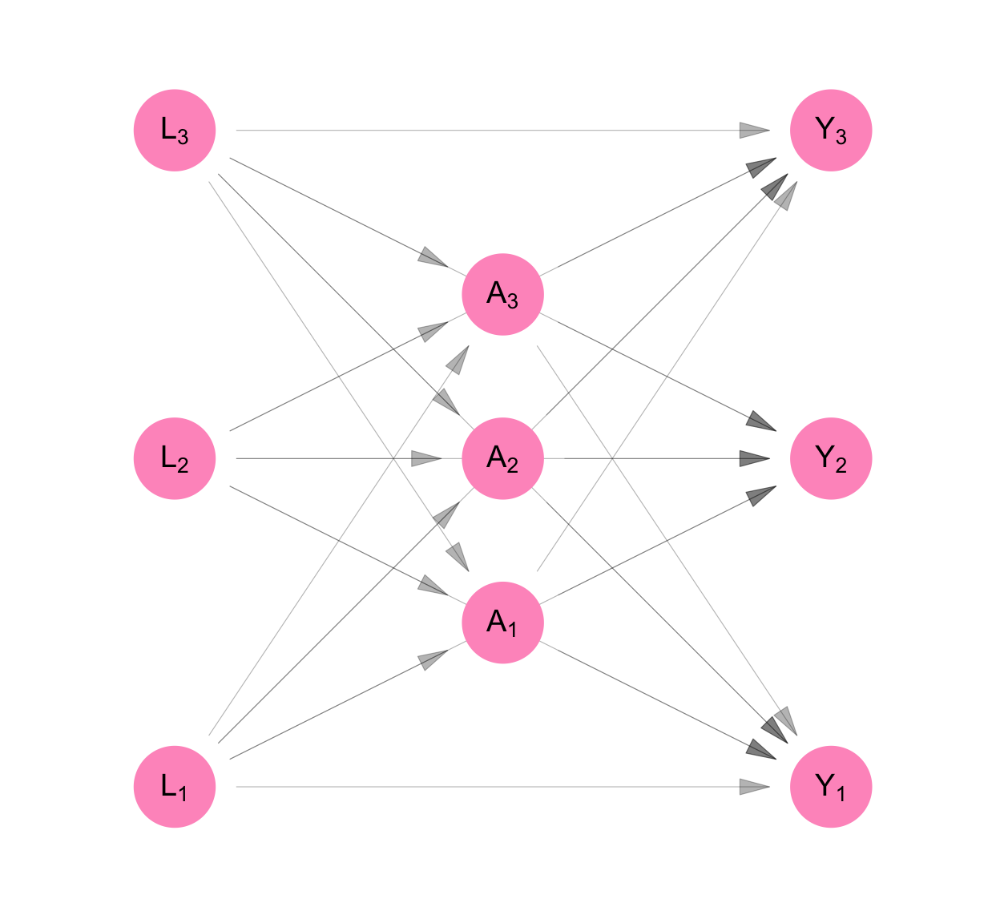
\[ \begin{aligned} L_1 &= f_{L_1}(U_{L_1}) \\ L_2 &= f_{L_2}(U_{L_2}) \\ L_3 &= f_{L_3}(U_{L_3} ) \\ A_1 &= f_{A_1}(U_{A_1}, L_1, L_2, L_3) \\ A_2 &= f_{A_2}(U_{A_2}, L_1, L_2, L_3) \\ A_3 &= f_{A_3}(U_{A_3}, L_1, L_2, L_3) \\ Y_1 &= f_{Y_1}(U_{Y_1}, L_1, L_2, L_3, A_1, A_2, A_3) \\ Y_2 &= f_{Y_2}(U_{Y_2}, L_1, L_2, L_3, A_1, A_2, A_3) \\ Y_3 &= f_{Y_3}(U_{Y_3}, L_1, L_2, L_3, A_1, A_2, A_3) \\ \end{aligned} \tag{C.3}\]
Classic causal inference makes the assumption of no interference. i.e. We assume that measurements made across participants, but not at the same time, are independent of each other. This is shown as the absence of arrows that point from the \(L_i\)’s to \(A_j\)’s, the \(L_i\)’s to the \(Y_j\)’s and the \(A_i\)’s to the \(Y_j\) for participants \(i\neq j\) (see Figure C.4).
This allows us to simplify the structural equation model so that each participant’s measures are a function of only measures taken on them.
\[ \begin{aligned} L_1 &= f_{L_1}(U_{L_1}) \\ L_2 &= f_{L_2}(U_{L_2}) \\ L_3 &= f_{L_3}(U_{L_3} ) \\ A_1 &= f_{A_1}(U_{A_1}, L_1) \\ A_2 &= f_{A_2}(U_{A_2}, L_2) \\ A_3 &= f_{A_3}(U_{A_3}, L_3) \\ Y_1 &= f_{Y_1}(U_{Y_1}, L_1, A_1, ) \\ Y_2 &= f_{Y_2}(U_{Y_2}, L_2, A_2) \\ Y_3 &= f_{Y_3}(U_{Y_3}, L_3, A_3) \\ \end{aligned} \tag{C.4}\]
Finally, we see above that the functions that generate observations \(L_i\) are similar in structure to each other, as are the the functions that generate \(A_i\)’s and \(Y_i\)s. We make the homogeneity assumption that the functions are identical to each other.
\[ \begin{aligned} f_L &= f_{L_1} = f_{L_2} = f_{L_3} \\ f_A &= f_{A_1} = f_{A_2} = f_{A_3} \\ f_Y &= f_{Y_1} = f_{Y_2} = f_{Y_3} \\ \end{aligned} \]
targets::tar_source("../R_functions")The homogeneity and independence assumptions allow us to re-write the structural equation model dropping the person subscript from the equations. Since the measures on each person are identically distributed, this model can be used three times to separately generate the measures for Person 1, Person 2, and Person 3. By contrast, the original model produced measures for all three people at one go.
Figure C.4 and Equation C.5 show the resulting non-parametric structural equation model for our data if we analyse it under classic causal inference. As a consequence of the assumptions stated above, we can represent the model using three equations rather than nine. We retain the person subscript on the random variables in Equation C.5 and we keep all nine nodes in the DAG on Figure C.4. This is to remind us that, though our model is for one person, our purpose was always to infer something about the sample of three people.
make_dag("independence") |>
plot_swig(node_radius = 0.2) +
scale_fill_mpxnyc(option = "light") +
scale_color_mpxnyc(option = "manual", values = c("covariate" = "black", "intervention" = "black")) +
theme_mpxnyc_blank()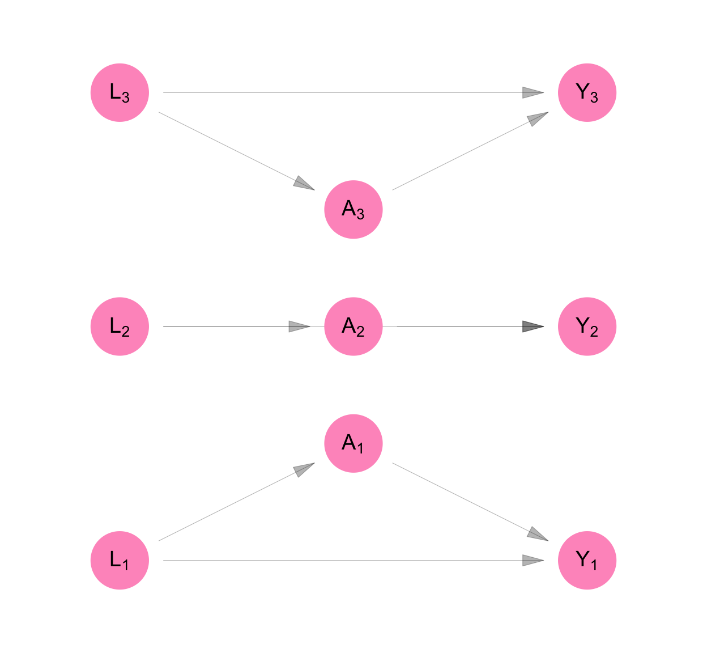
\[ \begin{aligned} L_i &= f_{L}( U_{L_i}) \\ A_i &= f_{A}( U_{A_i}, L_i) \\ Y_i &= f_{Y}( U_{Y_i}, L_i, A_i) \\ \end{aligned} \tag{C.5}\]
We define counterfactual outcomes \(Y_1^{(a_1)}\), \(Y_2^{(a_2)}\), and \(Y_3^{(a_3)}\) which represent the level of job opportunities, Persons 1, 2, and 3, would have if we set their dress to level \(a_1\), \(a_2\), and \(a_3\), respectively. Then the model for counterfactual variables is given by Equation C.6.
It is represented using the SWIG pictured in Figure C.5. A SWIG represents a structural equation model where some of the equations are superseded by the value assigned by the experimenter. For so-called “treatment variables,” the diagram separates the value of the variable as it would have been observed with no intervention (\(A_i\)) from the value that as it will be used in subsequent equations (\(a_i\)) as a result of the experimenter’s intervention.
Note that because of the assumption of no interference and no spillover, each counterfactual outcome is a function only of the treatment value of the same individual.
To ensure that counterfactual outcomes are well-defined for all experimental units, we make the assumption of positivity:
\[ 0 < P[A_i = a | L_i] < 1 \]
for \(a \in \{0,1\}\)
make_swig("independence") |>
plot_swig(node_radius = 0.2, nudge_intervention_labels = 0.16) +
scale_fill_mpxnyc(option = "light") +
scale_color_mpxnyc(option = "manual", values = c("covariate" = "black", "intervention" = "black")) +
theme_mpxnyc_blank()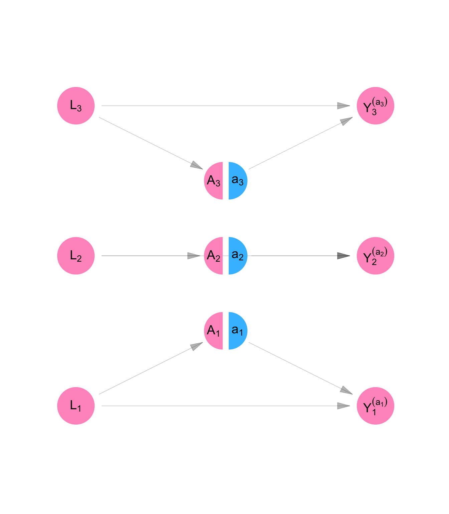
\[ \begin{aligned} L_i &= f_{L}( U_{L_i} ) \\ A_i &= f_{A}( U_{A_i}, L_i) \\ Y_i^{(a_i)} &= f_{Y}(U_{Y_i} , L_i, a_i) \\ \end{aligned} \tag{C.6}\]
targets::tar_source("../R_functions")We are interested in whether changing how formally someone dresses would change their level of job offers, on average, in our population. To determine the answer, we will compare the average counterfactual outcome of job opportunities for formal dress to the average counterfactual outcome of job opportunities for non-formal dress. i.e. We will make the following comparison:
\[ \begin{aligned} E \left[ \frac{1}{n} \sum_i Y_i^{(a=1)} - Y_i^{(a=0)} \right] \end{aligned} \]
targets::tar_source("../R_functions")Once we have specified the hypothetical quantities from our thought experiment, we “identify” them, meaning write them in terms of the observed rather than counterfactual model. It is sufficient to identify the quantity:
\[ \begin{aligned} E[Y_i^{(a)}] &= E \left[ E[Y_i^{(a)} | L_i] \right] \\ &= E \left[ E[f_{Y}(U_{Y_i} , L_i, a) | L_i] \right] \\ &= E \left[ E[f_{Y}(U_{Y_i} , L_i, a) | L_i , A_i] \right] \\ &= E \left[ E[f_{Y}(U_{Y_i} , L_i, a) | L_i , A_i = a] \right] \\ &= E \left[ E[Y_i | L_i , A_i = a] \right] \\ \end{aligned} \]
In the first line, we use the law of iterated expectations. In the second line, we use the definition for counterfactual outcome \(Y_i^{(a)}\) as specified in Equation C.6. In the third line, we use the fact that when \(L_i\) is fixed, \(f_{Y}(U_{Y_i} , L_i, a)\) is a function of random variable \(U_{Y_i}\) and \(A_i\) is a function of \(U_{A_i}\). Since \(U_{Y_i}\) and \(U_{A_i}\) are independent by definition of the NPSEM-IE, \(f_{Y}(U_{Y_i} , L_i, a) \perp A_i | L_i\). In the fourth line we consider the expected value of \(f_{Y}(U_{Y_i} , L_i, a)\) when \(A_i = a\), in particular. In the fifth line, we use the definition for observed value \(Y_i\) as specified in Equation C.5.
This section illustrated the model assumptions of the FFRCISTG—the foundation of modern causal inference in epidemiology—namely, independence and identical distributions. We decomposed the assumption of independence into two components: no spillover and no interference. We showed that the assumption of identical distributions is a statement about the structural equations that govern the causal process as it plays out within each observational unit.
Students of causal inference might be surprised that the identification assumptions—exchangeability and consistency—are not mentioned explicitly. That is because, within the FFRCISTG framework, these assumptions are not external requirements but direct consequences of the model itself.
Consistency follows from the equality of the structural functions and error terms that define counterfactual and observed outcomes within a causal model. Exchangeability, in turn, arises from the independence of error terms and the recursive structure of the NPSEM.
In the next section, we relax the assumption of no interference, introduce homogeneity assumptions about the process of interference, and arrive at a model called the Network FFRCISTG, which allows us to reason about causality in the presence of a fixed pattern of interference.
plot_icon(icon_name = "droplets", color = "dark_purple", shape = 0)
Use graphs to represent an arbitrary but fixed pattern of mutual influence among a group of observational units
Apply the assumptions of NFFRCISTG to a causal model for a vector of random variables representing measures taken on a group of observational units.
Before specifying a model that can accommodate the interdependence between Persons 1 and 2 in Example 2, we outline some useful definitions. We use these to extend the FFRCISTG model described in Section C.1 to accommodate settings characterized by causal interference.
Because of the assumptions of no interference and no spillover, FFRCISTG models are unable to incorporate this additional information about the relationships between individuals in Example 2. These relationships cause what is termed causal interference — the treatment level of one unit affects the outcome of another unit.
We make progress by mapping out the structure of interference using graphs and incorporate it into the model. We introduce a statistical model called the Network Finest Fully Randomized Causally Interpretable Structured Tree Graph (NFFRCISTG) — an extension of the FFRCISTG model that uses graphs to encode the pattern of causal interference among a set of observational units.
Below we build an NFFRCISTG model for Example 2, illustrating the assumptions of the model. Before that, we outline some ideas and language we will need for the illustration.
In Example 2, we make the assumption of no spillover - that equivalent measurements (e.g. \(L_1\), \(L_2\), and \(L_3\)) are independent of each other given all prior measures.
This is shown in Figure C.6, as the removal of arrows that connected the \(L_i\)’s, \(A_i\)’s and \(Y_i\)’s in Figure C.1. In Equation C.7, the \(L_i\)’s are not functions of each other, the \(A_i\)’s are not functions of each other, and the \(Y_i\)’s are not functions of each other, unlike in Equation C.1. This implies that conditioning all the measurements taken prior to a set of contemporaneous measures, the contemporaneous measures are independent.
make_dag("network_interference") |>
plot_swig(node_radius = 0.2) +
scale_fill_mpxnyc(option = "light") +
scale_color_mpxnyc(option = "manual", values = c("covariate" = "black")) +
theme_mpxnyc_blank()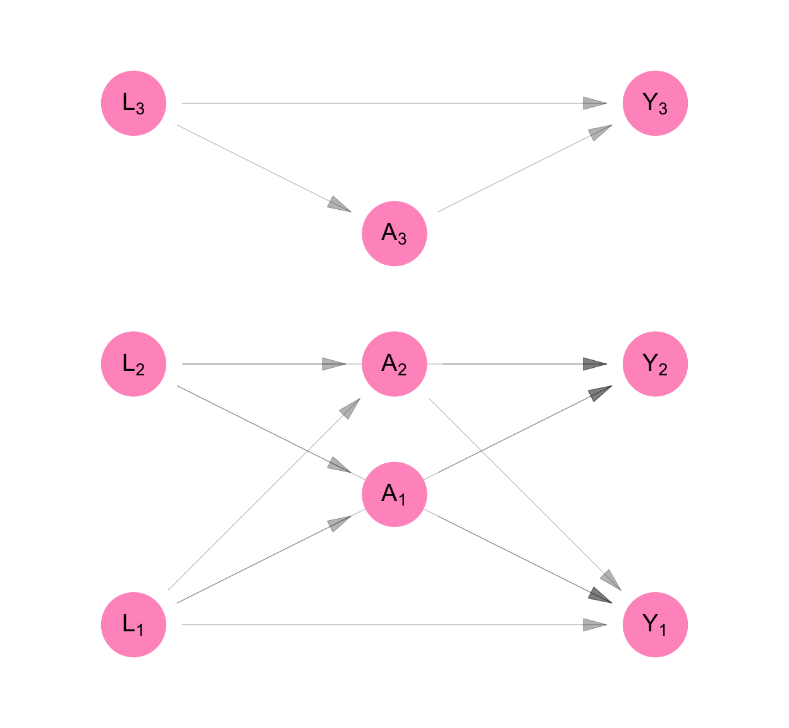
\[ \begin{aligned} L_1 &= f_{L_1}(U_{L_1}) \\ L_2 &= f_{L_2}(U_{L_2}) \\ L_3 &= f_{L_3}(U_{L_3} ) \\ A_1 &= f_{A_1}(U_{A_1}, L_1, L_2) \\ A_2 &= f_{A_2}(U_{A_2}, L_1, L_2) \\ A_3 &= f_{A_3}(U_{A_3}, L_3) \\ Y_1 &= f_{Y_1}(U_{Y_1}, L_1, L_2, A_1, A_2) \\ Y_2 &= f_{Y_2}(U_{Y_2}, L_1, L_2, A_1, A_2) \\ Y_3 &= f_{Y_3}(U_{Y_3}, L_3, A_3) \\ \end{aligned} \tag{C.7}\]
We make the assumption that interference respects some mapping between individuals - a mapping given by a graph adjacency matrix \(\Psi\). In Figure C.6, based on their relationships with one another, Person 1’s measures are connected with Person 2’s, and neither are connected with Person 3’s.
\[ \Psi = \begin{bmatrix} 0,& 1,& 0 \\ 1,& 0,& 0 \\ 0,& 0,& 0 \\ \end{bmatrix} \]
We assume that the exposure mapping for each variable in the structural model is separable. i.e. We define \(g_{A_i}\), \(h_{Y_i}\), and \(g_{Y_i}\) as component functions for \(A_i\) with respect to \(\mathbf{L}\), for \(Y_i\) with respect to \(\mathbf{A}\), and for \(Y_i\) with respect to \(\mathbf{L}\). The assumption of separability allows us to write the model as follows:
\[ \begin{aligned} L_1 &= f_{L_1}(U_{L_1}) \\ L_2 &= f_{L_2}(U_{L_2}) \\ L_3 &= f_{L_3}(U_{L_3} ) \\ A_1 &= f_{A_1}(U_{A_1}, L_1, g_{A_1}(\mathbf{L}, \Psi_1)) \\ A_2 &= f_{A_2}(U_{A_2}, L_2, g_{A_2}(\mathbf{L}, \Psi_2)) \\ A_3 &= f_{A_3}(U_{A_3}, L_3, g_{A_3}(\mathbf{L}, \Psi_3)) \\ Y_1 &= f_{Y_1}(U_{Y_1}, L_1, A_1, g_{Y_1}(\mathbf{L}, \Psi_1), h_{Y_1}(\mathbf{A}, \Psi_1)) \\ Y_2 &= f_{Y_2}(U_{Y_2}, L_2, A_2, g_{Y_2}(\mathbf{L}, \Psi_2), h_{Y_2}(\mathbf{A}, \Psi_2)) \\ Y_3 &= f_{Y_3}(U_{Y_3}, L_3,A_3, g_{Y_2}(\mathbf{L}, \Psi_3), h_{Y_2}(\mathbf{A}, \Psi_3)) \\ \end{aligned} \]
where \(\Psi_i\) is the \(i^{th}\) row of matrix \(\Psi\).
We assume that the value of a component function is invariant to its position in the network. This allows us to drop the person subscript on the network exposure mappings.
\[ \begin{aligned} L_1 &= f_{L_1}(U_{L_1}) \\ L_2 &= f_{L_2}(U_{L_2}) \\ L_3 &= f_{L_3}(U_{L_3} ) \\ A_1 &= f_{A_1}(U_{A_1}, L_1, g_{A}(\mathbf{L}, \Psi_1)) \\ A_2 &= f_{A_2}(U_{A_2}, L_2, g_{A}(\mathbf{L}, \Psi_2)) \\ A_3 &= f_{A_3}(U_{A_3}, L_3, g_{A}(\mathbf{L}, \Psi_3)) \\ Y_1 &= f_{Y_1}(U_{Y_1}, L_1, A_1, g_{Y}(\mathbf{L}, \Psi_1), h_{Y}(\mathbf{A}, \Psi_1)) \\ Y_2 &= f_{Y_2}(U_{Y_2}, L_2, A_2, g_{Y}(\mathbf{L}, \Psi_2), h_{Y}(\mathbf{A}, \Psi_2)) \\ Y_3 &= f_{Y_3}(U_{Y_3}, L_3,A_3, g_{Y}(\mathbf{L}, \Psi_3), h_{Y}(\mathbf{A}, \Psi_3)) \\ \end{aligned} \]
We also assume its bounded, meaning
\[ \begin{aligned} g_{A}(\mathbf{L}, \Psi_i) &\in \{0, 1\} \\ g_{Y}(\mathbf{L}, \Psi_i) &\in \{0, 1\} \\ h_{Y}(\mathbf{A}, \Psi_i) &\in \{0, 1\} \\ \end{aligned} \]
We assume that the structural equations that produce individual measures are identical across individuals. Hence, we can drop the person subscript from the structural equations.
\[ \begin{aligned} L_1 &= f_{L}(U_{L_1}) \\ L_2 &= f_{L}(U_{L_2}) \\ L_3 &= f_{L}(U_{L_3} ) \\ A_1 &= f_{A}(U_{A_1}, L_1, g_{A}(\mathbf{L}, \Psi_1)) \\ A_2 &= f_{A}(U_{A_2}, L_2, g_{A}(\mathbf{L}, \Psi_2)) \\ A_3 &= f_{A}(U_{A_3}, L_3, g_{A}(\mathbf{L}, \Psi_3)) \\ Y_1 &= f_{Y}(U_{Y_1}, L_1, A_1, g_{Y}(\mathbf{L}, \Psi_1), h_{Y}(\mathbf{A}, \Psi_1)) \\ Y_2 &= f_{Y}(U_{Y_2}, L_2, A_2, g_{Y}(\mathbf{L}, \Psi_2), h_{Y}(\mathbf{A}, \Psi_2)) \\ Y_3 &= f_{Y}(U_{Y_3}, L_3,A_3, g_{Y}(\mathbf{L}, \Psi_3), h_{Y}(\mathbf{A}, \Psi_3)) \\ \end{aligned} \]
Figure C.7 and Equation C.8 show the resulting NPSEM and DAG for our data. Because of the assumption of identical distributions, we can represent the model using three equations rather than nine. We retain the person subscript on the random variables in Equation C.8 and we keep all nine nodes in the DAG on Figure C.7 and add six additional nodes to represent network exposure values with respect to \(\mathbf{A}\) and \(\mathbf{L}\).
We draw the DAG like this to clarify that though our model is for one person, it represents a part of a system that relates all the people in the sample with each other. Our original purpose, after all, was to infer something about the sample, not any one individual in it.
make_dag("homogenous_interference") |>
plot_swig(node_radius = 0.2) +
scale_fill_mpxnyc(option = "light") +
scale_color_mpxnyc(option = "manual", values = c("covariate" = "black")) +
theme_mpxnyc_blank()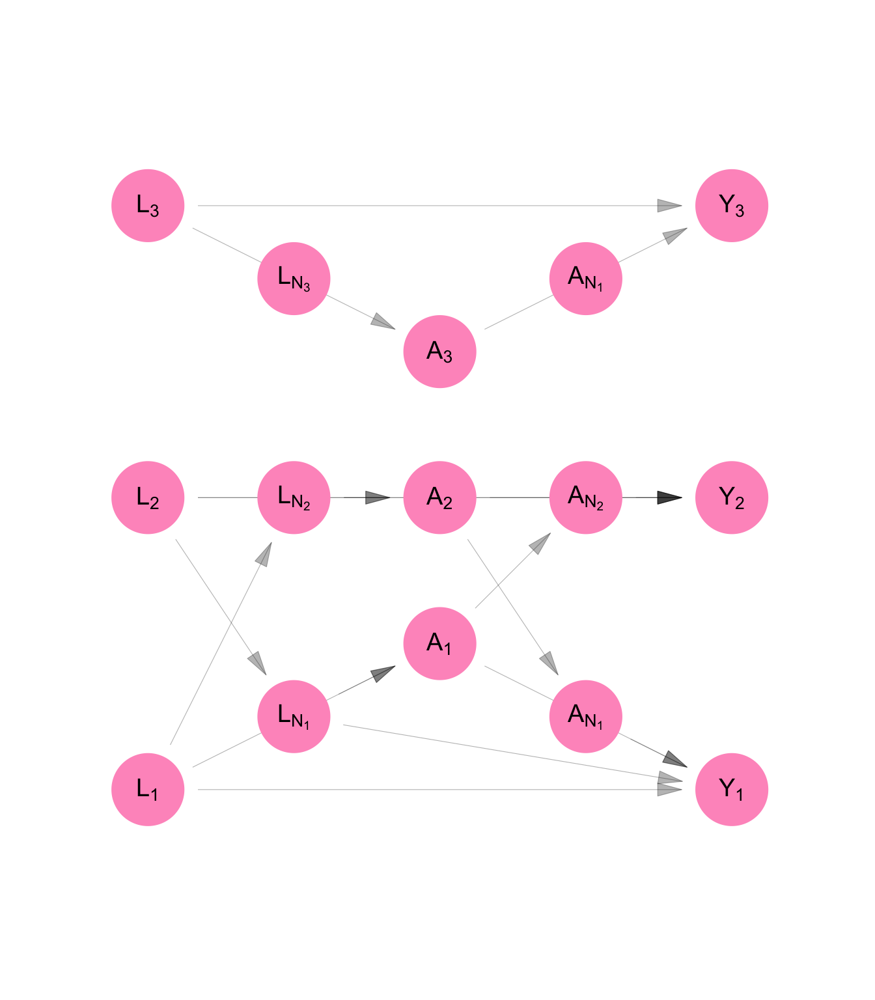
We can re-write the structural equation model like this:
\[ \begin{aligned} L_i &= f_{L}( U_{L_i} ) \\ A_i &= f_{A}( U_{A_i}, L_i, g_{A}(\textbf{L}, \Psi_i) ) \\ Y_i &= f_{Y}( U_{Y_i}, L_i, g_{Y}(\textbf{L}, \Psi_i), A_i, h_{Y}( \textbf{A}, \Psi_i ) ) \\ \end{aligned} \tag{C.8}\]
We define counterfactual outcomes \(Y_1^{(a_1, \mathbf{a}_{\mathscr{N}_1})}\), \(Y_2^{(a_2, \mathbf{a}_{\mathscr{N}_2})}\), and \(Y_3^{(a_3, \mathbf{a}_{\mathscr{N}_3})}\), which represent the level of job opportunities, Persons 1, 2, and 3, would have if we set their dress to level \(a_1\), \(a_2\), and \(a_3\), respectively. Then the model for counterfactual variable is given by Equation C.9. It is represented using a SWIG in Figure C.8.
Note that because of the assumption of network interference, the counterfactual outcome for Person 1 is a function of Person 2’s treatment value and vice versa. The counterfactual outcome for Person 3, on the other hand, is a function of Person 3’s treatment (\(a_3\)) alone. This is because \(\mathscr{N}_1 = \{2\}\), \(\mathscr{N}_2 = \{1\}\), and \(\mathscr{N}_3 = \{\}\), according to Example 2.
To ensure that counterfactual outcomes are well-defined for all experimental units, we make the assumption of positivity:
\[ 0 < P[A_i = a_i, h_Y (\mathbf{A}, \Psi_i) = h_Y(\mathbf{a}, \Psi_i)| L_i,g_{A}(\mathbf{L}, \Psi_i) ] < 1 \] for all \(\mathbf{a} \in \{0,1\}^n\)
make_swig("homogenous_interference") |>
plot_swig(node_radius = 0.2, nudge_intervention_labels = 0.16) +
scale_fill_mpxnyc(option = "light") +
scale_color_mpxnyc(option = "manual", values = c("covariate" = "black", "intervention" = "black")) +
theme_mpxnyc_blank()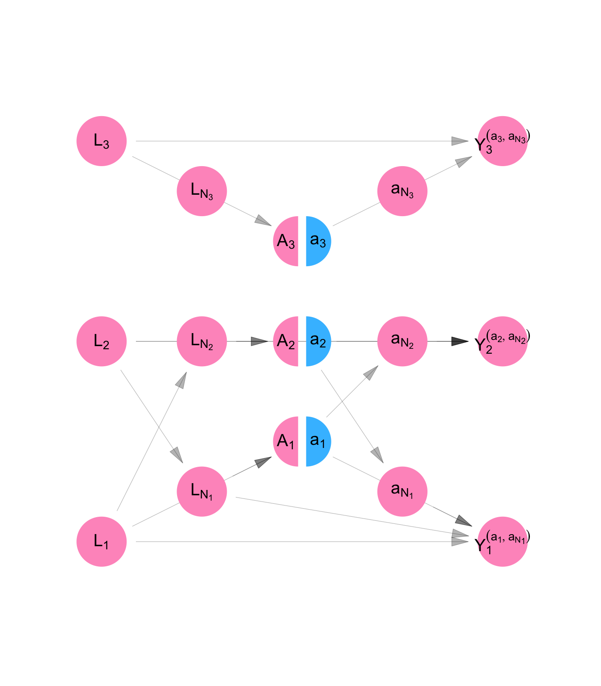
\[ \begin{aligned} L_i &= f_{L}( U_{L_i} ) \\ A_i &= f_{A}( U_{A_i}, L_i, g_{A}(\textbf{L}, \Psi_i) ) \\ Y_i^{(a_i,\textbf{a}_{\mathscr{N}_i} )} &= f_{Y}(U_{Y_i}, L_i, a_i, g_{Y}(\textbf{L}, \Psi_i), h_{Y}(\textbf{a}, \Psi_i) ) \\ \end{aligned} \tag{C.9}\]
We are interested in whether on average, changing someone’s dress would change their level of job offers. To determine the answer, we will compare the average counterfactual outcome of job opportunities if everyone were forced to wear formal dress to the average counterfactual outcome of job opportunities if everyone wore non-formal dress. i.e. We will make the following comparison:
\[ ATE = \frac{1}{n}\sum_i E[Y_i^{(a = 1, \mathbf{a}_{\mathscr{N}_i} = \textbf{ 1})} - Y_i^{(a = 0, \mathbf{a}_{\mathscr{N}_i} = \textbf{ 0})}] \] It is possible to decompose this average causal effect into a portion attributable to direct (within individual) causal pathways. This tells us, on average, to what extent one’s own dress affects one own’s job opportunities.
\[ ADE = \frac{1}{n}\sum_i E[Y_i^{(a = 1, \mathbf{a}_{\mathscr{N}_i} = \textbf{ 0})} - Y_i^{(a = 0, \mathbf{a}_{\mathscr{N}_i} = \textbf{ 0})}] \]
We can calculate the portion of the average total effect attributable to spillover (cross-individual) causal pathways. This tells us, on average, to what extent one’s spouse’s dress affects one’s job opportunities.
\[ ASE = \frac{1}{n}\sum_i E[Y_i^{(a = 1, \mathbf{a}_{\mathscr{N}_i} = \textbf{ 1})} - Y_i^{(a = 1, \mathbf{a}_{\mathscr{N}_i} = \textbf{ 0})}] \]
\[ \begin{aligned} E[Y_i^{(a_i, \mathbf{a}_{\mathscr{N}_i})} ] &= E[E[Y_i^{(a_i, \mathbf{a}_{\mathscr{N}_i})} | \mathbf{L}]] \\ &= E[E[Y_i^{(a_i, \mathbf{a}_{\mathscr{N}_i})} | L_i , g_Y(\mathbf{L}, \Psi_i)] ] \\ &= E[E[f_{Y}(U_{Y_i}, L_i, a_i, g_{Y}(\textbf{L}, \Psi_i), h_{Y}(\textbf{a}, \Psi_i)) | L_i , g_Y(\mathbf{L}, \Psi_i)] ] \\ &= E[E[f_{Y}(...) | L_i , g_Y(\mathbf{L}, \Psi_i), A_i = a_i, h_Y(\textbf{A}, \Psi_i) = h_Y(\textbf{a}, \Psi_i)]] \\ &= E[E[Y_i | L_i , g_Y(\mathbf{L}, \Psi_i), A_i = a_i, h_Y(\textbf{A}, \Psi_i) = h_Y(\textbf{a}, \Psi_i)]] \\ \end{aligned} \]
In the first line we use the law of iterated expectations. In the second line, we use the separability of the structural equation for \(Y_i^{(a_i, \mathbf{a}_{\mathscr{N}_i})}\). In the third line we replace substitute for the structural equation. In the fourth line, we use the fact that in the counterfactual model, \(\mathbf{A}\) is independent of \(f_{Y}(...)\) conditional on \(\mathbf{L}\). In the final line we use the fact that structural equation for \(Y_i^{(a_i, \mathbf{a}_{\mathscr{N}_i})}\) in the counterfactual data NPSEM-IE is identical to the structural equation for \(Y_i\) in the observed data NPSEM-IE.
This section extended the classical framework by relaxing the assumption of independence across observational units. By introducing homogeneous network interference, we allowed observational units to affect one another through a fixed, structured pattern of connections, while assuming that the mechanism of influence is identical across all relationships.
Homogeneous network interference makes it possible to represent interference formally and to study its causal implications analytically. Under this assumption, we can summarize the influence of the network on each unit through exposure mappings, which translate complex interdependence into measurable quantities that can be modeled within standard causal frameworks.
This homogeneous interference model -— the Network FFRCISTG —- preserves the tractability of the classical FFRCISTG while acknowledging the presence of spillover effects. In the next section, we generalize further to consider random network interference, in which the network itself is treated as a random structure rather than a fixed pattern of relationships.
plot_icon(icon_name = "droplets", color = "dark_purple", shape = 0)
We used data from RESPND-MI to assess the effectiveness of two approaches to conducting mass vaccination campaigns quickly. MPX NYC is an online survey of about 1300 individuals that was conducted in 2022 in New York City. Study participants were asked to indicate their home on a map and were asked to indicate places they had had social contact in a congregate setting. Spatial coordinates were converted into community district identifiers. Community districts spatially partition the city of New York.
In the SWING shown in Figure C.15 and Equation C.15, we show an intervention which replaces the function for the risk rating for each community (\(\mathbf{R}\)) with the function \(h\). Every variable that is downstream of the first variable created using \(h\) is marked with a superscript \((h)\) to show that it is partially determined by that function.
We ask what the impact of taking policy \(h\) would be on the decision whether or not to vaccinate a neighborhood \(j\) at time \(s\) (\(T_{js}\)). We can also ask what the impact of the policy is on the the exposure of participant \(i\) to the campaign message at time \(s\) (\(M_{is}\)).
Our interest in RESPND-MI, however, was initially to provide evidence to inform a targeted vaccination campaign, so the main outcomes of interest are the vaccination status of each individual \(i\) at time \(s\) (\(V^{(h)}_{is}\)). We were interested in contrasting two approaches to assigning risk-ratings to community districts: the contact-neutralizing approach and the movement-neutralizing approach.
Whereas the contact-neutralizing approach ranks community districts by how many individuals are connected to them, the movement-neutralizing approach ranks community districts by how centrally they are connected to other community districts through the exchange of individuals.
We make the simplifying assumption that only one neighborhood is vaccinated at a time - the top-ranked one. We make the further simplifying assumptions that every person associated with a community district (either through residence or social activity) receives the campaign message when a community district is vaccinated, and that every person who receives a campaign message gets vaccinated. Once an individual is vaccinated, they remain vaccinated.
According to the model specified by structural equations C.15, no individual \(i\) has been vaccinated at time 0, and nobody receives the campaign message. The risk rating for community district \(j\) at time \(s\) is some function \(h\) of the vaccination status at time \(s-1\) for each individual who is connected to that community district. An intervention is conducted in community district \(j\) as time \(s\) if that community district has the highest risk rating. Each individual \(i\) is said to have received the campaign message at time \(s\) if the intervention was conducted in any of the community districts he is connected to. Finally, we consider individual \(i\) vaccinated at time \(s\) if they were vaccinated at time \(s-1\) or if they received the campaign message in time \(s\). The risk rating is given by the function \(h\).
\[ \begin{aligned} M_{0i} &= 0 \\ V_{0i} &= 0 \\ R_{sj}^{(h)} &= h(\mathbf{V}_{s-1}) \\ T_{sj}^{(h)} &= \begin{cases} 1 & R_{sj}^{(h)} = max_k R_{sk}^{(h)} \\ 0 & \text{otherwise} \end{cases} \\ M_{si}^{(h)} &= \begin{cases} 1 & \mathbf{T}_{s\mathscr{N}_i}^{(h)} \neq \mathbf{0} \\ 0 & \text{otherwise} \end{cases} \\ V_{si}^{(h)} &= \begin{cases} 1 & M_{si}^{(h)} = 1 \text{ or } V_{s-1,i}^{(h)} = 1\\ 0 & \text{otherwise} \end{cases} \\ \end{aligned} \tag{C.15}\]
program_dang_mpx_nyc() |>
plot_swig(node_radius = 0.5, nudge_intervention_labels = 0.2) +
scale_fill_mpxnyc(option = "light") +
scale_color_mpxnyc(option = "manual", values = c("Community" = "black", "Individual" = "black", "Graph" = "black")) +
theme_mpxnyc_blank()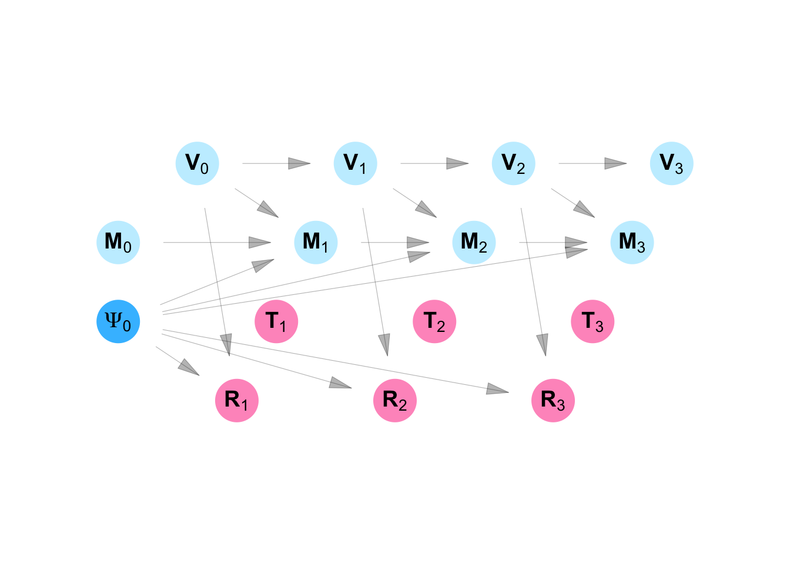
Define \(\psi(i, j)\) as an adjacency function - an indicator function that equals to \(1\) if Person \(i\) lives in or visits neighborhood \(j\) and \(0\) otherwise. Let \(\mathscr{N}_P\) be the indices of all person nodes and \(\mathscr{N}_N\) be a set of indices for neighborhood nodes. Under the contact-neutralizing approach:
\[ h_{sj}(\mathbf{V}_{s-1}) = \sum_{ i \in \mathscr{N}_P} (1 -V_{(s-1), i}) \times \psi(i, j) \]
and under the movement-neutralizing approach:
\[ h_{sj}(\mathbf{V}_{s-1}) = \sum_{ i \in \mathscr{N}_P} (1 -V_{(s-1), i}) \times \psi(i, j) \sum_{ k \in \mathscr{N}_N} \psi(i, k) \]
Intervention coverage for the \(s^{th}\) community district to be immunized, is defined:
\[ C_s^{(h)} = \frac{1}{|\mathscr{N}_p|}\sum_i V_{si}^{(h)} \]
The cumulative intervention coverage after immunizing \(s\) community districts is therefore:
\[ \bar{C_s}^{(h)} = \sum_{v = 1}^s{C_v }^{(h)} \]
We simulated the intervention outlined above using RESPND-MI data by calculating the \(G^{s}(N, \psi_s)\) where \(s\) ranges from \(1\) to the total number of community districts. We measured the uncertainty of our estimates by re-sampling study participants with replacement.
Acknowledgements: The statistical framework for SSNAC was first presented at the Society for Epidemiologic Research Meeting (Boston, June 2025) at a workshop titled “Single World Intervention Graphs (SWIGs) for the practicing epidemiologist” organized and taught by Aaron Sarvet (University of Massachusetts), Mats J. Stensrud (École polytechnique fédérale de Lausanne), and Kerollos Wanis (University of Texas), and also taught by Keletso Makofane (Ctrl+F), James M. Robins (Harvard University), and Thomas Richardson (University of Washington).
Lead author: Keletso Makofane, MPH, PhD. Editor: Nicholas Diamond, MPH. (Published: June 2025).
C.3 Social-spatial networks
Use graph generators to represent arbitrary and random patterns of mutual influence among a group of observational units with two classes: people and places.
Apply the assumptions of BRNFFRCISTG to a causal model including graph generators.
A drawback of the NFFRCISTG model described in Section C.2 is that it assumes patterns of causal interference are known. As a consequence, it is not possible to acknowledge the inherent uncertainty in our understanding of the network and, moreso, our measurement of it.
In this section of the appendix, we extend the NFFRCISTG model by allowing for the inclusion of two classes of observational unit — people and places — and by allowing the relationships between people and places to be randomly generated by the causal model. We name this the Bipartite Random Network FFRCISTG model (BRNFFRCISTG). It is a causal model that includes one or more graph generators — structural equations that model the network edges as random variables.
Before outlining the BRNFFRCISTG, we introduce new tools to mirror the shift towards thinking about statistical inference as the task of inferring something about the distribution using one growing realization of the model, rather than many fixed (in length) realizations. We introduce the causal Directed Acyclic Network Graph (DANG) and the Single World Intervention Network Graph (SWING).
You are a public health officer at the department of health in Exampleville and are planning to conduct and assess a three-week flu vaccination campaign. None of the townspeople have been vaccinated against flu. There is a population of six residents in the city, and they each live in one of three neighborhoods. In addition, residents visit their friends’ homes in other neighborhoods.
At time 0, Person 1 lives in Neighborhood A and visits Neighborhood B. Person 2 lives in Neighborhood B, but visits Neighborhood C. Person 3 lives in Neighborhood C and visits Neighborhood B. Persons 4 and 5 live in Neighborhood C and do not visit any other neighborhoods. At the beginning of each week, before any public-health activities, each resident of Exampleville has the opportunity to change the neighborhoods they live in and visit.
The city of Exampleville has a structured approach to vaccination campaigns. At the beginning of each week, each neighborhood gets a risk rating based on the prevalence of vaccination among its residents and visitors. Based on that rating, each neighborhood decides whether to conduct a local vaccination drive.
Vaccination drives are conducted in the same way regardless of neighborhood — visitors and residents are offered immediate vaccination at a nearby mobile van through a pop-up message on the local dating app. Not everyone will receive the messages because some will not open the app during the campaign period. Those who do will have the choice of getting vaccinated or not. Each person can only get vaccinated once.
DANGs
We introduce the causal directed acyclic network graph (DANG). A causal DANG encodes a process which exhibits a fixed or random pattern of causal interference across observational units. It represents the process in two parts: the structural part represents the causal process as it unfolds within each unit. The relational part represents the pattern or patterns of influence across units.
The structural part of a DANG is a DAG representing the relationships among random vectors (rather than random scalar variables). It has standard interpretation under d-separation rules rules. The relational part is a markov random field. Each node represents an observational unit and undirected edges represent mutual causal influence. Observational units admit the Markov property: conditional on any connected units, a given unit is independent of other units in the graph.
Code
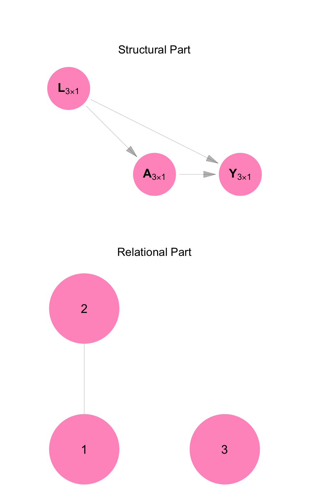
For example, above is a DANG of the model we developed for Example 2. The relational part of Figure C.9 shows that Persons 1 and 2 influence each other. The structural part shows a DAG of random vectors \(\mathbf{L}\), \(\mathbf{A}\), and \(\mathbf{Y}\), each of length 3. It shows the marriage between Persons 1 and 2 separately from the causal structure linking employment, dress, and job opportunities within each individual.
Mixed DANGs
DANGs not only allow for compact description of causal systems characterized by interference; they can describe causal systems that involve more than one kind of observational unit. We focus on systems that involve persons as one type and places as the other. Figure C.10 shows a mixed DANG for the first week of the campaign mentioned in Example 2.
\(\mathbf{T}\) is the decision to conduct a vaccination campaign or not in each of the three places. \(\mathbf{M}\) indicates whether each of the six people received a vaccination-campaign message. \(\mathbf{V}\) indicates whether each of the people got vaccinated.
Code
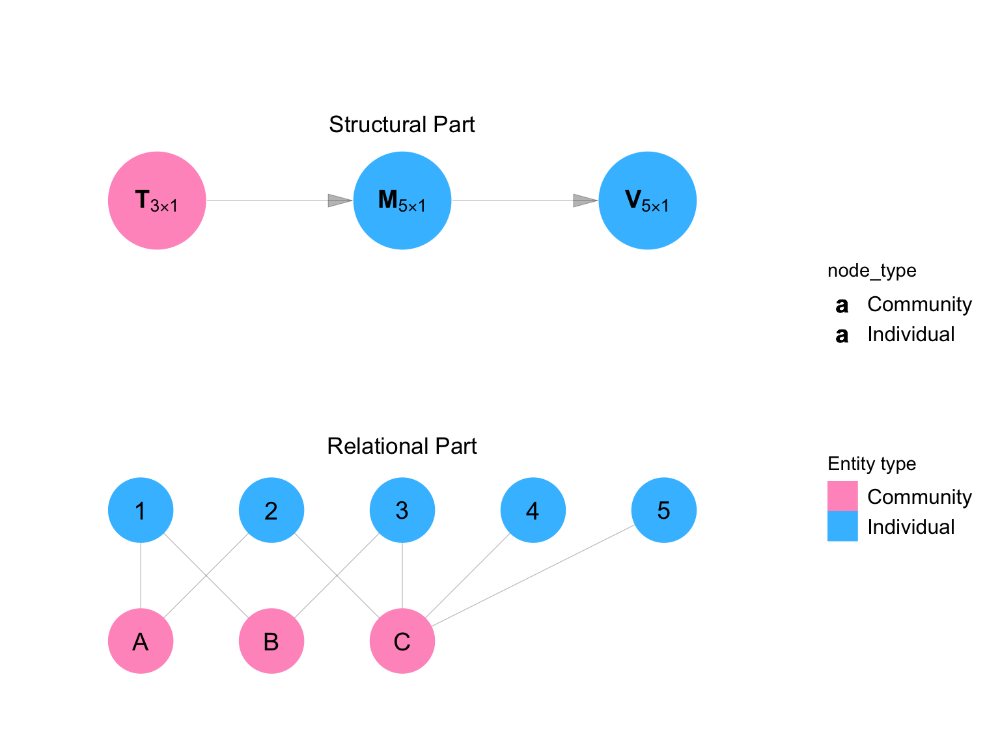
SWINGs
We introduce the Single World Intervention Network Graph (SWING) — an extension of the SWIG that allows for the representation of the counterfactual outcomes in complex causal systems.
Code
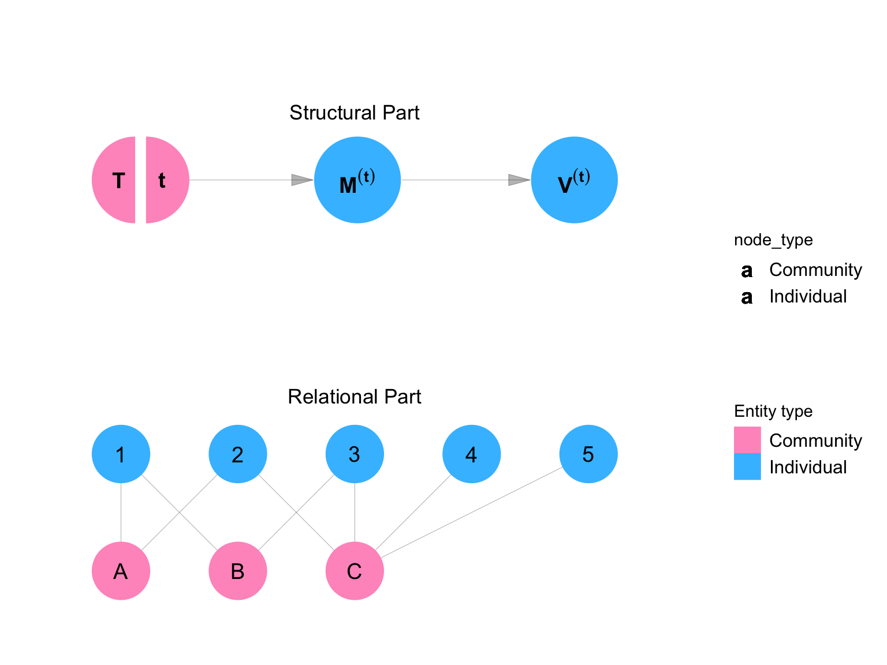
Like the DANG, the SWING has two parts: a structural part and a relational part. Like the SWIG, the SWING splits the nodes that are to be intervened upon by the experimenter. Figure C.11 shows the counterfactual distribution of the variables in the model under an intervention setting \(\mathbf{T}\) to the value \(\mathbf{t}\).
A graph generator is an array of structural equations, each modelling an edge in a random graph. Random graphs bring probability into the network itself. They allow us to model a time-varying pattern of interference, or even different patterns of interference for different variables.
In Example 3, for instance, every week the townspeople possibly change their community of residence and/or the communities they visit. We can model this scenario by including each potential relationship with a community as a random variable.
The error terms included in a graph generator are not independent of each other, but are independent of error terms not included. We define a non-parametric structural equation model that includes graph generators as a non-parametric structural equation model with grouped errors (NPSEM-GE).
The random network finest fully randomized causally interpretrable structured tree graph (RNFFRCISTG) is a causal model defined by the independence assumptions of: i) random network interference, and ii) no spillover, and the homogeneity assumptions of iii) homogeneous random network interference with respect to the included random graphs, iv) identical distributions.
A bipartite graph is one where nodes are partitioned into two classes and edges connect only across classes. A bipartite RNFFRCISTG is an RNFFRCISTG in which all graph generators produce bipartite graphs with the same partitioning.
In random-interference problems, it is often useful to model people as one class and places or events as the other. An edge then represents a person’s affiliation with a place. This structure allows us to represent exposures that are not purely person-to-person, but mediated by shared environments.
Code
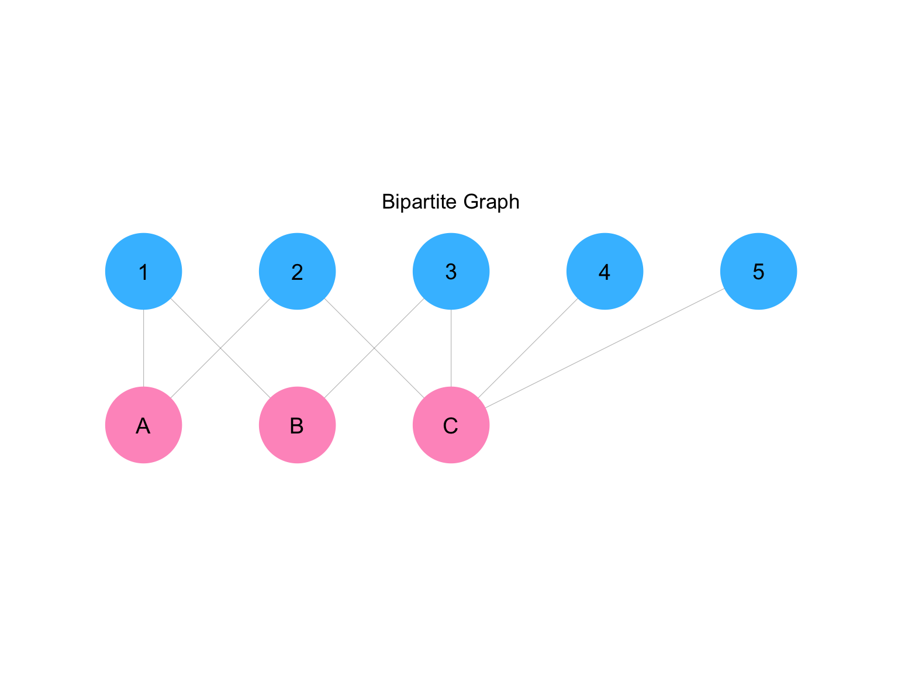
Definition C.28 (Graph generator) A graph generator gives the entries of an random graph with \(n\) nodes. It is an \(n \times n\) function \([f_{\psi_{ij}}]_{i,j \in \mathcal N}\) whose entries \(\psi(i,j)\) are each a deterministic, symmetric function of other variables in the model along with an error term.
\[ \psi(i,j) = f_{\psi_{ij}}(\mathbf{Pa}(\psi(i,j)), U_{\psi_{ij}}) \]
such that
\[ U_{\psi_{ij}} = U_{\psi_{ji}} \text{ and } f_{\psi_{ij}} = f_{\psi_{ji}} \]
Definition C.29 (NPSEM-GE) A non-parametric structural equation model with grouped errors (NPSEM-GE) is an NPSEM that includes two kinds of structural equations: those that describe the causal process as it unfolds within units (structural), and those that describe the causal process as it unfolds across units (relational). In the former type, error terms are mutually independent. In the latter, error terms are dependent within groups of equations defined as graph generators.
Definition C.30 (Homogenous random network interference) An exposure mapping exhibits homogeneous random network interference with respect to a random graph set \(\mathcal H\) if it is separable and all its component functions are network exposure mappings with respect to \(\mathcal H\). An NPSEM exhibits homogenous random network interference if all its exposure mappings exhibit homogenous random network interference.
Definition C.31 (RNFFRCISTG) A random network finest fully randomized causally interpretable structured tree graph (RNFFRCISTG) is a causal model defined relative to an NPSEM-GE which satisfies the (1) no spillover, (2) homogenous random network interference with respect to random graph set \(\mathcal H\), and (3) identical distributions assumptions.
Definition C.32 (Bipartite NPSEM-GE) A random bipartite graph NPSEM-GE is an NPSEM-GE which whose generators produce bipartite graphs on the same partitioning of \(\mathbf V\).
Definition C.33 (BRNFFRCISTG model) A bipartite random network finest fully randomized causally interpretable structured tree graph (BRNFFRCISTG) is a causal model defined relative to a bipartite NPSEM-GE which satisfies the (1) no spillover, (2) homogenous random network interference, and (3) identical distributions assumptions.
C.3.1 Assumptions
In Example 3, let \(\mathbf R_{s}\) be the random vector for the risk ratings of each neighborhood at time \(s\); \(\mathbf T_{s}\) be a random vector whose entries indicate if each neighborhood received a vaccination intervention or not based on the rating, \(\mathbf M_{s}\) be a random vector indicating whether each person received a vaccination message through their dating app, and let \(\mathbf V_{s}\) be a random indicator indicating whether each person is vaccinated or not. Each of these vectors is of length \(n\).
Finaly, let \(\mathbf{\Psi}_{s}\) be an \(n \times n\) adjacency matrix for the network at time \(s\). We denote arrays of structural equations using upper-case \(F\) and single structural equations using lower-case \(f\). We start with a fully connected NPSEM-GE for random vectors \(\mathbf R_{s}\), \(\mathbf T_{s}\), \(\mathbf M_{s}\), and, \(\mathbf R_{s}\); and graph generator \(\mathbf{\Psi}_{s}\).
Independence 1: No spillover
We assume no spillover: equivalent measurements on observational units are independent of each other given all prior measures. This is implied by the following DANG-like compact representation of the model.
\[ \begin{aligned} \text{Structural } (\mathbb{R}^n) \\ & \mathbf R_{s} & &= f_{\mathbf R_s}(\mathbf U_{\mathbf R_{s}}, \mathbf{V}_{s-1}, \mathbf{\Psi}_{s-1}) \\ & \mathbf T_{s} & &= f_{\mathbf T_s}(\mathbf U_{\mathbf T_{s}}, \mathbf R_{s}) \\ & \mathbf M_{s} & &= f_{\mathbf M_s} (\mathbf U_{\mathbf M_{s}} , \mathbf V_{s-1}, \mathbf M_{s-1}, \mathbf{T}_{s}, \mathbf{\Psi}_{s}) \\ & \mathbf V_{s} & &= f_{\mathbf V_s}(\mathbf U_{\mathbf V_{s}}, \mathbf M_{s}, \mathbf V_{s-1}) \\ \text{Relational } (\mathbb{R}^{n\times n}) \\ & \mathbf{\Psi}_{s} & &= F_{\mathbf{\Psi_s}}(\mathbf U_{\mathbf{\Psi}_{s}}, \mathbf{V}_{s-1}, \mathbf{\Psi}_{s-1}) \\ \end{aligned} \tag{C.10}\]
where
\[ \mathbf f_{*}(\mathbf{U}_*, \mathbf{Pa(*)}) = \begin{bmatrix} f_{*_1}(U_{*_1}, \mathbf{Pa}(*_1))\\ f_{*_2}(U_{*_2}, \mathbf{Pa}(*_2))\\ ... \\ f_{*_n}(U_{*_n}, \mathbf{Pa}(*_n))\\ \end{bmatrix} \]
Independence 2: Random network interference
We make the assumption that interference respects a mapping between individuals and neighborhoods as given by random graph \(\mathbf \Psi\), and the empty graph \(\mathbf 0\).
\[ \begin{aligned} & f_{\mathbf R_s} & &\text{is loyal to} & \mathbf{\Psi}_{s-1}\\ & f_{\mathbf T_s} & &\text{is loyal to} & \mathbf{0}\\ & f_{\mathbf M_s} & &\text{is loyal to} & \mathbf{\Psi}_{s}\\ & f_{\mathbf V_s} & &\text{is loyal to} & \mathbf{0}\\ \end{aligned} \]
Homogeneity 1: Homogenous random network interference
We assume that the exposure mapping for each variable in the structural part of the model is separable and component functions are network exposure mappings with respect to \(\mathbf{\Psi}_{s}\).
\[ \begin{aligned} \text{Structural } (\mathbb{R}^n) \\ & \mathbf R_{s} & &= f_{\mathbf R_s}(\mathbf U_{\mathbf R_{s}}, \mathbf g_{VR}(\mathbf{V}_{s-1}, \mathbf{\Psi}_{s-1}) ) \\ & \mathbf T_{s} & &= f_{\mathbf T_s}(\mathbf U_{\mathbf T_{s}}, \mathbf R_{s}) \\ & \mathbf M_{s} & &= f_{\mathbf M_s} (\mathbf U_{\mathbf M_{s}} , \mathbf V_{s-1}, \mathbf M_{s-1}, \mathbf g_{TM}(\mathbf{T}_{s}, \mathbf{\Psi}_{s})) \\ & \mathbf V_{s} & &= f_{\mathbf V_s}(\mathbf U_{\mathbf V_{s}}, \mathbf M_{s}, \mathbf V_{s-1}) \\ \text{Relational } (\mathbb{R}^{n\times n}) \\ & \mathbf{\Psi}_{s} & &= F_{\mathbf{\Psi_s}}(\mathbf U_{\mathbf{\Psi}_{s}}, \mathbf{V}_{s-1}, \mathbf{\Psi}_{s-1}) \\ \end{aligned} \tag{C.11}\]
where
\[ \mathbf g_{*}(\mathbf{V}^*, \mathbf{\Psi}^*) = \begin{bmatrix} g_{*}(\mathbf{V}^*, \Psi^*_1)\\ g_{*}(\mathbf{V}^*, \Psi^*_2) \\ ... \\ g_{*}(\mathbf{V}^*, \Psi^*_n) \\ \end{bmatrix} \] and \(\Psi^*_k\) is the \(k^{th}\) row of the adjacency matrix \(\mathbf \Psi^*\). The functions \(g_{*}\) are network exposure mappings.
Homogeneity 2: Identical distributions
We assume that all structural equations contained in the vector \(\mathbf f_{*}\) are identical.
\[ \mathbf f_{*}(\mathbf{U}_*, \mathbf{Pa(*)}) = \begin{bmatrix} f_{*}(U_{*_1}, \mathbf{Pa}(*_1))\\ f_{*}(U_{*_2}, \mathbf{Pa}(*_2))\\ ... \\ f_{*}(U_{*_n}, \mathbf{Pa}(*_n))\\ \end{bmatrix} \]
Homogeneity 3: Bipartite network
We assume that \(\mathbf{\Psi}_{s}\) is bipartite. This means that we can represent it as a \(p \times q\) matrix. We can also represent place attributes using vectors of length \(q\), and person attributes using vectors of length \(p\).
\[ \begin{aligned} \text{Structural: Places } (\mathbb{R}^q) \\ & \mathbf R_{s} & &= f_{\mathbf R_s}(\mathbf U_{\mathbf R_{s}}, \mathbf g_{VR}(\mathbf{V}_{s-1}, \mathbf{\Psi}_{s-1}) ) \\ & \mathbf T_{s} & &= f_{\mathbf T_s}(\mathbf U_{\mathbf T_{s}}, \mathbf R_{s}) \\ \text{Structural: People } (\mathbb{R}^p) \\ & \mathbf M_{s} & &= f_{\mathbf M_s} (\mathbf U_{\mathbf M_{s}} , \mathbf V_{s-1}, \mathbf M_{s-1}, \mathbf g_{TM}(\mathbf{T}_{s}, \mathbf{\Psi}_{s})) \\ & \mathbf V_{s} & &= f_{\mathbf V_s}(\mathbf U_{\mathbf V_{s}}, \mathbf M_{s}, \mathbf V_{s-1}) \\ \text{Relational } (\mathbb{R}^{p \times q}) \\ & \mathbf{\Psi}_{s} & &= F_{\mathbf{\Psi_s}}(\mathbf U_{\mathbf{\Psi}_{s}}, \mathbf{V}_{s-1}, \mathbf{\Psi}_{s-1}) \\ \end{aligned} \tag{C.12}\]
with \(g_{VR}\) and \(g_{TM}\) redefined to be conformable.
Homogeneity 4: Identical and independent attachment
We assume each row of the adjacency matrix \({\Psi}_{si}\) is generated by the same \(q \times 1\) array of structural equations \(F_{{\mathbf \Psi_s}}\). We further assume that \(\mathbf U_{{\Psi}_{si}}\), the rows of the \(p \times q\) matrix of error terms \(\mathbf U_{{\Psi}_{s}}\), are independent. This implies that each person in the model attaches to a selection of places independently of any other person and based on identical structural equations.
\[ \begin{aligned} \text{Structural: Places } (\mathbb{R}) \\ & R_{sj} & &= f_{ R_s}( U_{ R_{sj}}, g_{VR}(\mathbf{V}_{s-1}, {[\mathbf \Psi^T_s]}_{j}) ) \\ & T_{sj} & &= f_{ T_s}( U_{ T_{sj}}, R_{sj}) \\ \text{Structural: People } (\mathbb{R}) \\ & M_{si} & &= f_{ M_s} ( U_{ M_{si}} , V_{s-1,i}, M_{s-1, i}, g_{TM}(\mathbf{T}_{s}, {\Psi}_{si})) \\ & V_{si} & &= f_{ V_s}( U_{ V_{si}}, M_{si}, V_{s-1, i}) \\ \text{Relational: People in places } (\mathbb{R}^{1 \times q}) \\ & {\Psi}_{si} & &= F_{{\mathbf \Psi_s}}(\mathbf U_{{\Psi}_{si}}, \mathbf{V}_{s-1}, \mathbf{\Psi}_{s-1}) \\ \end{aligned} \]
where \({[\mathbf \Psi^T_s]}_{j}\) is the \(j^{th}\) row of the transpose of the adjacency matrix \(\mathbf{\Psi}_{s}\) and
\[ \mathbf U_{{\Psi}_{si}} \perp \mathbf U_{{\Psi}_{sj}} \text{ for } i \neq j \]
Homogeneity 5: Time homogeneity
Finally, we assume that structural equations are identical across time points \(s\), with the exception of the random variables defined for \(s = 0\). Each of these has no parenets.
\[ \begin{aligned} \text{Structural: Places } (\mathbb{R}) \\ & R_{0j} & &= f_{ R_0}( U_{ R_{0j}}) \\ & T_{0j} & &= f_{ T_0}( U_{ T_{0j}}) \\ & R_{sj} & &= f_{ R}( U_{ R_{sj}}, g_{VR}(\mathbf{V}_{s-1}, {[\mathbf \Psi^T_s]}_{j}) ) \\ & T_{sj} & &= f_{ T}( U_{ T_{sj}}, R_{sj}) \\ \text{Structural: People } (\mathbb{R}) \\ & M_{0i} & &= f_{ M_0} ( U_{ M_{0i}}) \\ & V_{0i} & &= f_{ V_0}( U_{ V_{0i}}) \\ & M_{si} & &= f_{ M} ( U_{ M_{si}} , V_{s-1,i}, M_{s-1, i}, g_{TM}(\mathbf{T}_{s}, {\Psi}_{si})) \\ & V_{si} & &= f_{ V}( U_{ V_{si}}, M_{si}, V_{s-1, i}) \\ \text{Relational: People in places } (\mathbb{R^{1 \times q}}) \\ & {\Psi}_{0i} & &= F_{{\mathbf \Psi_0}}(\mathbf U_{{\Psi}_{0i}}) \\ & {\Psi}_{si} & &= F_{{\mathbf \Psi}}(\mathbf U_{{\Psi}_{si}}, \mathbf{V}_{s-1}, \mathbf{\Psi}_{s-1}) \\ \end{aligned} \]
C.3.2 Structural equations
Observed data model
The causal DANG shown in Figure C.13 represents the three week campaign mentioned in Example 3. Let \(\mathbf{T}_s\) be a \(3\times1\) vector whose entries \(T_{sj}\) are 1 if Neighborhood \(j\) is to be vaccinated at time \(s\) and \(0\) otherwise. \(\mathbf{M}_s\) is a \(5\times1\) vector whose entries \(M_{si}\) indicate whether the \(i^{\text{th}}\) person received a campaign message at time \(s\) or not. \(\mathbf{V}_s\) is a \(5\times1\) vector whose entries \(V_{si}\) show whether participant \(i\) is vaccinated or not at time \(s\). Finally, \(\mathbf{R}_s\) is a \(3\times1\) vector whose entries \(R_{si}\) shows the risk rating of neighborhood \(j\) at the beginning of time \(s\). Equation C.13 specifies this model for Person \(i\) and Neighborhood \(j\) at time \(s\):
Code
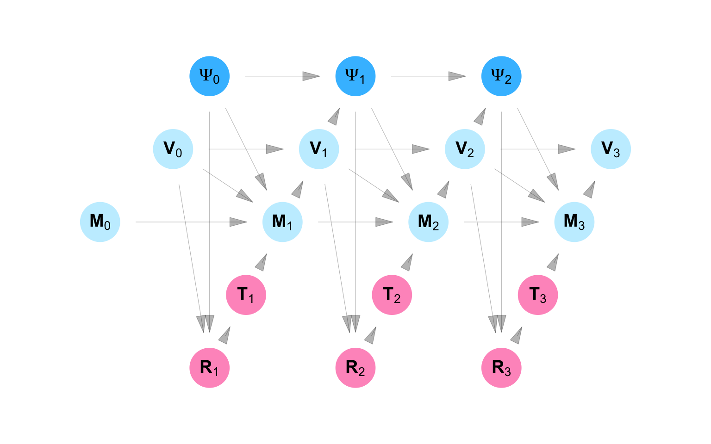
\[ \begin{aligned} & R_{0j} & &= f_{ R_0}( U_{ R_{0j}}) \\ & T_{0j} & &= f_{ T_0}( U_{ T_{0j}}) \\ & R_{sj} & &= f_{ R}( U_{ R_{sj}}, g_{VR}(\mathbf{V}_{s-1}, {[\mathbf \Psi^T_s]}_{j}) ) \\ & T_{sj} & &= f_{ T}( U_{ T_{sj}}, R_{sj}) \\ & M_{0i} & &= f_{ M_0} ( U_{ M_{0i}}) \\ & V_{0i} & &= f_{ V_0}( U_{ V_{0i}}) \\ & M_{si} & &= f_{ M} ( U_{ M_{si}} , V_{s-1,i}, M_{s-1, i}, g_{TM}(\mathbf{T}_{s}, {\Psi}_{si})) \\ & V_{si} & &= f_{ V}( U_{ V_{si}}, M_{si}, V_{s-1, i}) \\ & {\Psi}_{0i} & &= f_{{\mathbf \Psi_0}}(\mathbf U_{{\Psi}_{0i}}) \\ & {\Psi}_{si} & &= f_{{\mathbf \Psi}}(\mathbf U_{{\Psi}_{si}}, \mathbf{V}_{s-1}, \mathbf{\Psi}_{s-1}) \\ \end{aligned} \tag{C.13}\]
According to Equation C.13, \(R_{sj}\), the risk rating for Neighborhood \(j\) at time \(s\), is a function of \(\mathbf{V}_{s-1}\), the vaccination status of every individual at time \(s-1\). \(T_{sj}\) - an indicator for whether or not Neighborhood \(j\) conducted a campaign at time \(s\), is a function of the risk rating for Neighborhood \(j\) at time \(s\).
\(M_{si}\), which indicates whether or not an Person \(i\) received a campaign message at time \(s\), is a function of whether or not person \(i\) was vaccinated at time \(s-1\), whether they received a campaign message at time \(s-1\), and whether or not one of the neighborhoods they live in or visit conducted a campaign at time \(s\). The vaccination status of individual \(i\) at time \(s\) is a function of whether or not they received a campaign message at time \(s\) and whether or not they were vaccinated as at time \(s-1\).
Counterfactual data model
[under development]
Code
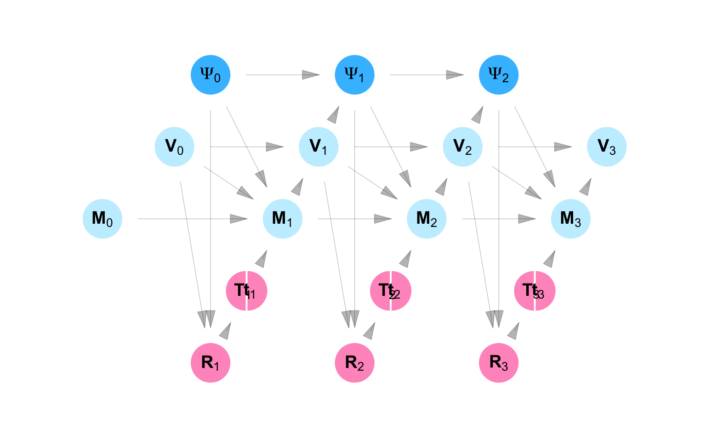
\[ \begin{aligned} & R_{0j} & &= f_{ R_0}( U_{ R_{0j}}) \\ & T_{0j} & &= f_{ T_0}( U_{ T_{0j}}) \\ & R_{sj} & &= f_{ R}( U_{ R_{sj}}, g_{VR}(\mathbf{V}_{s-1}, {[\mathbf \Psi^T_s]}_{j}) ) \\ & T_{sj} & &= f_{ T}( U_{ T_{sj}}, R_{sj}) \\ & M_{0i} & &= f_{ M_0} ( U_{ M_{0i}}) \\ & V_{0i} & &= f_{ V_0}( U_{ V_{0i}}) \\ & M_{si} & &= f_{ M} ( U_{ M_{si}} , V_{s-1,i}, M_{s-1, i}, g_{TM}(\mathbf{t}_{s}, {\Psi}_{si})) \\ & V_{si} & &= f_{ V}( U_{ V_{si}}, M_{si}, V_{s-1, i}) \\ & {\Psi}_{0i} & &= f_{{\mathbf \Psi_0}}(\mathbf U_{{\Psi}_{0i}}) \\ & {\Psi}_{si} & &= f_{{\mathbf \Psi}}(\mathbf U_{{\Psi}_{si}}, \mathbf{V}_{s-1}, \mathbf{\Psi}_{s-1}) \\ \end{aligned} \tag{C.14}\]
C.3.3 Estimands
[under development]
C.3.4 Identification
[under development]
C.3.5 Remarks
This section introduced the Random Bipartite Network FFRCISTG, extending the framework to settings where both the network structure and the relationships between units are treated as random variables. By doing so, we transformed the fixed-network setting of homogeneous interference into one that approximates independent and identically distributed (IID) sampling.
In this formulation, each observation corresponds to an individual node with its own set of measures and network exposure values. Because the underlying structure is bipartite, linking individuals and places, and because all places are fully ascertained, it is possible to determine the complete set of exposure values for every included person (as opposed to place) observation.
This structure makes it possible to imagine a super-population in which individuals are independently censored from the observed sample but would each have fully observed exposure mappings. In this sense, the random bipartite model recovers many of the inferential properties of IID sampling while preserving the dependencies that define network-based causal processes.
In the next section, we show how a model of this form can be used to coordinate a real outbreak response—whether through targeted vaccination, screening referral, or intensified information dissemination—demonstrating how network-based causal models can inform efficient and equitable public health intervention.
Code